À Deriva
Ein Angelspiel, das in einem durchsichtigen Streifen am unteren Bildschirmrand wohnt — oder hinter den Symbolen auf dem Desktop. Es angelt von allein, während du arbeitest; Klicken bringt mehr, aber zuschauen musst du nie.
Fünf Orte in Brasilien, vom Araguaia bis Fernando de Noronha. Sechzig Fische zum Sammeln, ein Tier auf jeder Karte, und über allem das Wetter, das von selbst umschlägt.
Diese Seite zeigt, was hinter den Zahlen steckt — wer nur angeln will, braucht sie nicht.
Der Ablauf
Der Fisch beißt von allein an. Im Schnitt alle 18 s, mit einer Schwankung von 0,7× bis 1,3× — und schneller, je nach Rute, Boot und Tieren.
Ein “!” erscheint im Streifen. Du hast 2 Sekunden zum Klicken.
Innerhalb des Zeitfensters geklickt: perfekter Anhieb — der Fisch ist +50% mehr wert und kann nicht entkommen.
Nicht geklickt: Das Spiel würfelt die Fehlerchance deines Köders aus. Trifft sie, ist der Fisch weg; sonst landet er ganz normal im Boot.
Boot voll: Das Angeln stoppt. Verkauf alles über die Leiste oder kauf eine größere Kiste.
Tag und Nacht
Nachts zeigen sich die guten Fische öfter: selten +20%, episch +40%, legendär +60% in der tiefsten Nacht (der Effekt kommt und geht mit dem Übergang). Die Mitternachtsrute funktioniert nur in dieser Zeit — und der Blutmond kommt nur dann.
Seltenheit und Köder
Der Köder ist die wichtigste Entscheidung im Spiel: Er verändert alles gleichzeitig — die Chance auf einen guten Fisch und die Chance, ihn zu verlieren. Besserer Köder verfehlt seltener.
| Köder | Hält | Extra-Effekt | Gewöhnlich | Ungewöhnlich | Selten | Episch | Legendär | Himmlisch |
|---|---|---|---|---|---|---|---|---|
| 🍬 Jujuba (gratis) | 65% | — | 70,0% | 22,0% | 6,4% | 1,30% | 0,28% | 0,010% |
| Ungewöhnlich | 78% | +20% Geschwindigkeit · +8% Goldstern | 54,1% | 30,0% | 11,5% | 3,40% | 1,00% | 0,050% |
| Selten | 85% | +25% Verkauf · +18% Goldstern | 37,1% | 32,1% | 20,1% | 8,02% | 2,71% | 0,150% |
| Episch | 92% | +35% Verkauf · +29% Goldstern | 23,3% | 29,3% | 26,3% | 14,7% | 6,37% | 0,403% |
| Legendär | 96% | +20% Verkauf · +43% Goldstern | 13,5% | 22,8% | 29,0% | 21,7% | 12,9% | 1,026% |
| Himmlisch (nur aus der Truhe) | 98% | +15% Geschwindigkeit, +40% Verkauf und +61% Goldstern | 6,0% | 14,0% | 25,0% | 28,00% | 24,0% | 3,000% |
Jede Karte verkauft ihre eigenen Köder, mit anderen Namen, aber denselben fünf Stufen. „Hält“ ist die Chance, dass ein Fisch, der angebissen hat, auch im Boot ankommt. Rute und Tiere verschieben sie noch, in beide Richtungen.
Guter Köder zahlt sich aus. Er hält nicht nur mehr, jede Stufe hat auch einen eigenen Bonus — Geschwindigkeit beim ungewöhnlichen, Verkaufswert bei den drei oberen. Die Ausnahme ist der legendäre: Er kostet mehr, als er einbringt. Er ist kein Köder zum Geldverdienen — unter den kaufbaren ist er der, der am stärksten das Himmlische anzieht, und ohne himmlischen Fisch wird keine Sammlung vollständig.
Der Preis steigt von Karte zu Karte. Derselbe legendäre Köder kostet 10.000 am Araguaia und 32.000 auf Noronha — ungefähr das Dreifache von der ersten bis zur letzten Karte.
Die Ködertruhe
Oben im Köder-Reiter steht eine Truhe, und sie kostet die Hälfte eines Pakets legendärer Köder der jeweiligen Karte — 5.000 am Araguaia, 16.000 auf Noronha. Öffnen lost einen Köder der Karte aus, in der Menge eines normalen Kaufs.
| Köder | Inhalt | Chance |
|---|---|---|
| Ungewöhnlich | ein Paket | 44,8% |
| Selten | ein Paket | 29,9% |
| Episch | ein Paket | 16,9% |
| Legendär | ein Paket | 7,9% |
| Himmlisch | 10 Köder | 0,5% |
Der himmlische Köder ist der einzige ohne Preis: Er kommt nur aus der Truhe. Und er ist der einzige, der in allem gleichzeitig gut ist — mehr seltene Fische, größere Fische, schneller und wertvoller. Jede Karte hat ihren eigenen: der Muçum de Ouro am Araguaia, der Tucunaré de Prata am Rio Negro, der Camarão Gigante Dourado in Furnas, der Corrico de Cristal an der Küste und die Isca Abissal auf Noronha.
Wetterereignisse
Alle 1 Min. würfelt das Spiel; die Chance, dass ein Ereignis beginnt, liegt bei 5% (das erste frühestens nach 30 s Spielzeit) — im Schnitt ein Ereignis alle 20 Min.. Es kündigt sich 10 s vorher an und dauert 5 bis 7 Min., spontan ausgelost. Jedes Ereignis hat einen garantierten Biss — irgendwann zwischen 20% und 80% der Dauer kommt ein Fisch dieser Seltenheit, ohne Auslosung.
| Ereignis | Gewicht | Garantiert | Effekt | Wo |
|---|---|---|---|---|
| 🌧️ Regen | 50 | Episch | Beißt 30% schneller | überall |
| ✨ Leuchtende Wasser | 16 | Episch | ×20 auf die Himmlisch-Chance | überall |
| ⛈️ Sturm | 12 | Legendär | ×1,8 auf die hohen Seltenheiten · +10 Pp. Fehler | überall |
| 🩸 Blutmond | 8 | Legendär | ×5 auf die Legendär-Chance | nur nachts |
| 🌊 Pororoca | 8 | Legendär | ×2,4 auf die hohen · +15 Pp. Fehler | Araguaia e Rio Negro |
| 🫧 Wende der Wasser | 8 | Legendär | ×2 auf die hohen · gewöhnliche fallen auf ¼ | Furnas |
| 🌀 Hurrikan | 8 | Legendär | ×2,4 auf die hohen · +15 Pp. Fehler | Costa de SC |
Gewicht gibt an, wie stark das Ereignis bei der Auslosung zählt, und ist kein Prozentwert: Regen allein macht mehr als die Hälfte aller Auslosungen aus. Karten-Ereignisse kommen nur in die Auslosung, wenn du dort bist — die Pororoca zum Beispiel gibt es nur auf den beiden Flüssen.
Ruten
Alle kosten 700 als Grundpreis, aber jede gekaufte Rute macht die nächste um 50% teurer. Ausgerüstet ist immer nur eine.
| Rute | Was sie macht |
|---|---|
| 🎋 Bambus | Die Startrute, ohne Bonus. |
| 🎣 Fiberglas | +40% Geschwindigkeit, verfehlt aber 25% öfter. |
| 🪝 Stahl | Hält 40% besser. Was sie hakt, holt sie auch rein. |
| ✨ Carbon | +30% Qualität (mehr seltene Fische), −20% Geschwindigkeit und verfehlt 25% öfter. |
| 💰 Händler | Fische bringen beim Verkauf +20%. |
| 🌙 Mitternacht | Nachts: +40% Geschwindigkeit und +25% Qualität. Tagsüber eine ganz normale Rute. |
Boote und Kisten
Das Boot bestimmt, wie viele Fische hineinpassen, bevor das Angeln stoppt. Jedes gekaufte Boot macht das nächste 15% teurer. Die letzten beiden erfordern Trophäen, zusätzlich zum Geld.
| Boot | Plätze | Preis | Extra |
|---|---|---|---|
| 🛶 Kanu | 12 | — | das Startboot |
| ⛵ Verstärktes Boot | 24 | 2.000 | ausgewogen |
| 💨 Schnellboot | 28 | 6.000 | +25% Geschwindigkeit |
| 🎣 Trawler | 48 | 14.000 | −15% Geschwindigkeit — zum Laufenlassen |
| 🐟 Fabrikschiff | 36 | 55.000 | +25% Verkauf · erfordert 2 🏆 |
| 🔱 Hochsee-Trawler | 36 | 90.000 | +20% Qualität · erfordert 3 🏆 — zahlenmäßig die Spitze der Flotte |
Die Kisten vervielfachen die Kapazität des Boots und bauen aufeinander auf — jede erfordert die vorherige: Styropor ×1,5 (25.000), Kühlbox ×2 (80.000), Laderaum ×2,5 (250.000 + 1 Trophäe), Kühlkammer ×3 (600.000 + 2 Trophäen).
Eine Trophäe ist die vollständige Sammlung einer Karte — siehe Karten und Trophäen.
Tiere
Jede Karte hat ein Tier. Es taucht von selbst auf, mit 0,1% Chance pro gefangenem Fisch. Du wirst eine ganze Weile angeln, bevor du das erste siehst. Du kannst 3 aktive gleichzeitig haben, und die Boni addieren sich.
| Tier | Karte | Bonus |
|---|---|---|
| 🐊 Kaiman | Rio Araguaia | Hält 8% besser, was anbeißt |
| 🦦 Riesenotter | Rio Negro | +6% Verkaufswert |
| 🦢 Jabiru | Lago de Furnas | +7% Qualität |
| 🐬 Amazonasdelfin | Costa de Santa Catarina | −10% Zeit zwischen den Bissen |
| 🐢 Meeresschildkröte | Fernando de Noronha | +8% Qualität bei den hohen Seltenheiten |
Karten und Trophäen
Du beginnst am Araguaia. Jede neue Karte öffnet sich gegen Bezahlung — oder gratis, wenn du die Trophäe der vorherigen hast. Die Trophäe gibt es fürs Vervollständigen der Sammlung eines Ortes: alle 12 Fische, von jedem mindestens einer.
Die Spalte Himmlisch zeigt, wie oft der himmlische Fisch dieser Karte erscheint, verglichen mit dem Araguaia: Dort kommt er mit voller Chance; auf Noronha mit einem Zehntel davon. Da die Sammlung den himmlischen Fisch einschließt, hängt die Trophäe jeder Karte meistens an ihm.
| Karte | Bundesstaat | Kosten | Himmlisch | Eigenes Ereignis |
|---|---|---|---|---|
| Rio Araguaia | TO/GO | Start | ×1 | 🌊 Pororoca |
| Rio Negro | AM | 55.000 | ×0,60 | — |
| Lago de Furnas | MG | 200.000 | ×0,35 | 🫧 Wende der Wasser |
| Costa de Santa Catarina | SC | 330.000 | ×0,20 | 🌀 Hurrikan |
| Fernando de Noronha | PE | 900.000 | ×0,10 | — |
Größe, Gewicht und Sterne
Jeder Fisch, der ins Boot kommt, hat Länge und Gewicht, und beides steht auf der Fangkarte: „Dourado · 75,3 cm · 8,1 kg“. Der größte jeder Art wird als Rekord gespeichert, und genau den zeigt die Sammlung.
Das Gewicht folgt der Länge
Das Gewicht wird nicht getrennt ausgelost: Es folgt der Länge, wie bei einem echten Fisch. Die Spannen jeder Art richten sich nach Maßen aus dem brasilianischen Sportangeln, mit der Obergrenze bei einem außergewöhnlichen Exemplar — und nicht beim Weltrekord.
Was einen Fisch größer macht
Große Fische sind selten. Drei Entscheidungen treiben die Größe nach oben — und der Köder treibt am stärksten:
| Womit | Schnitt |
|---|---|
| Nichts — Jujuba, kein Klick, tagsüber | 56,5 cm |
| Nur die Nacht | 58,0 cm |
| Nur der perfekte Anhieb | 58,3 cm |
| Nur der legendäre Köder | 61,8 cm |
| Nur der himmlische Köder | 63,8 cm |
| Alles zusammen, mit dem legendären | 68,1 cm |
| Alles zusammen, mit dem himmlischen | 71,1 cm |
Der himmlische treibt noch stärker als der legendäre: Die drei Zentimeter zwischen den letzten beiden Zeilen gehen allein auf ihn. Die Rute ändert nichts an der Größe, und die Zeit mit offenem Spiel auch nicht.
Die vier Sterne
In der Sammlung zeigt jeder Fisch den Rekord und einen Stern — die Stufe, in die dein größtes Exemplar gefallen ist. Der Stern gehört zum Rekord, nicht zum letzten Fisch.
| Stern | Ab | Was es bedeutet |
|---|---|---|
| 🥉 Bronze | — | Einmal gefangen. |
| 🥈 Silber | 45% | Ein überdurchschnittliches Exemplar. |
| 🥇 Gold | 80% | Ein wirklich großer Fisch. |
| 💎 Platin | 97% | Nahe am Maximum der Art. |
Jeder Fang bringt Gold in 6,6% der Fälle ganz ohne Ausrüstung, 13,8% mit legendärem Köder, sauberem Klick und nachts, und 16,5% wenn du den legendären gegen den himmlischen tauschst. Platin geht denselben Weg: von 0,9% bis 2,5%.
Zentimeter oder Zoll
Die Wahl steht in den Einstellungen, zwischen metrisch (cm und kg) und imperial (in und lb).
Der Aufkäufer
Ein Boot, das jede Stunde vorbeikommt, deinen Laderaum leert und einen Teil des Werts zahlt. Du hast immer nur einen, und ein besserer ersetzt den alten. So verdient das Spiel wirklich von allein — gegen eine Gebühr.
| Aufkäufer | Kostet | Zahlt | Wann er sich lohnt |
|---|---|---|---|
| 🪵 Floß | 3.000 | 20% | Noch am Araguaia, wenn 3.000 viel Geld sind. Zahlt wenig, zeigt dir aber, wofür ein Aufkäufer gut ist |
| 🛶 Boot | 40.000 | 50% | Gleich nach dem Fabrikschiff, wenn sich der Laderaum füllt, ohne dass du hinsiehst |
| 🚤 Schiff | 120.000 | 70% | Nach dem Hochsee-Trawler, wenn jeder Fang schon viel wert ist |
Keiner zahlt so gut wie der Verkauf von Hand. Du tauschst Geld dagegen, nicht dabei sein zu müssen — und manchmal lohnt sich das.
Was über den Bildschirm zieht
Abgesehen vom Fisch hat der Streifen ein Eigenleben: Tiere ziehen vorbei, der Himmel verändert sich, und das eine oder andere verraten wir lieber nicht. Nichts davon ist anklickbar oder ändert eine Zahl — es ist Kulisse, und was an welchem Ort auftaucht, entdeckst du selbst.
Nicht zu verwechseln mit den Tieren: Die schaltest du frei, aktivierst sie, und sie geben Boni. Siehe den Abschnitt Tiere.
Wo das Spiel wohnt
Es läuft auf zwei Arten, und umgeschaltet wird im Menü (Taste ▲) unter Einstellungen. Ein Moduswechsel startet das Spiel neu, und die Wahl bleibt gespeichert.
Streifen
Ein Band über der Taskleiste, immer im Blick. Klicks gehen dort durch, wo kein Spiel ist, also stört es nicht, was darunter liegt.Hintergrundbild
Die ganze Landschaft hinter den Desktop-Symbolen. Die Symbole bleiben anklickbar, und jedes Fenster legt sich darüber. Nur unter Windows.Im Hintergrundbild-Modus wandert die HUD-Leiste in die untere rechte Ecke (links wohnen die Symbole), und die Menüs öffnen sich in einem eigenen kleinen Fenster — geschlossen wird mit Esc, per Klick daneben oder über das Fisch-Symbol im Infobereich neben der Uhr.
Im Streifen gibt es die Option Immer im Vordergrund. Eingeschaltet liegt der Streifen über allem, auch über der Taskleiste; ausgeschaltet verschwindet er hinter jedem Fenster — auch hinter der Leiste selbst. Das ist der Unterschied zwischen einem Spiel, das immer sichtbar ist, und einem, das nur da ist, wenn der Desktop frei ist.
Außerdem in den Einstellungen: Mit mehr als einem Bildschirm kannst du wählen, auf welchem Bildschirm das Spiel wohnt (auch das startet neu), und es gibt Mit Windows starten, damit das Spiel von selbst aufgeht, wenn der Computer startet.
Der Ton
Das Spiel hat Musik, Effekte und Wetter — alle drei lassen sich einzeln ein- und ausschalten, mit eigener Lautstärke, unter Einstellungen › Ton.
Musik
Dreizehn Stücke, die sich von selbst abwechseln — manche für den Tag, andere für die Nacht.Effekte
Nur, was auf dem Fluss passiert: der Biss, der Schwimmer, der Fisch im Korb, der perfekte Anhieb, die Trophäe, das Tier.Wetter
Regen, Sturm und Wind unter der Musik, solange das Ereignis dauert.Drei Dinge, die alles beschleunigen
Klick auf das „!“
+50% auf den Fisch und null Fehler. Der einzige Moment, in dem deine Aufmerksamkeit Geld wert ist.Erst den Köder verbessern, dann die Rute
Der Köder verändert Seltenheit und Fehlerquote gleichzeitig. Von der Jujuba zum Legendären steigt, was du hältst, von 65% auf 96%.Heb dir die guten für die Nacht auf
Legendäres taucht nachts 60% öfter auf, und genau dann kann der Blutmond kommen — er multipliziert das mit 5.Hüte
Der Angler beginnt mit dem Strohhut. Die anderen fallen beim Angeln, und sie sind echte Items in deinem Steam-Inventar: Du kannst sie tragen, tauschen und auf dem Markt verkaufen.
Wie ein Hut fällt
Du angelst. Das Spiel zählt die echte Angelzeit — nicht die Zeit mit offenem Fenster. Bei vollem Laderaum kommt die Rute aus dem Wasser und der Zähler pausiert: Leere den Laderaum, und er macht da weiter, wo er aufgehört hat.
Nach etwa 3 Stunden davon fliegt zu einem zufälligen Zeitpunkt ein Storch mit einem Sack durch den Streifen.
Über ihm hüpft ein “!” — und du musst den Storch anklicken — bevor er den Bildschirm verlässt.
Geklickt: Die Anfrage geht an Steam, und das Item liefert Steam, nicht das Spiel. Was gekommen ist, erscheint im Kleiderschrank, im Spiel.
Höchstens 2 pro Tag, mit mindestens 6 Stunden zwischen zwei Störchen. Wenn du nicht am Computer sitzt und der Storch vorbeifliegt, verlierst du nichts: Die Angelzeit bleibt gespeichert, und er kommt später wieder.
Was es gibt, und was jeder kann
Jeder Hut hat seinen Bonus: Er hilft dir beim Angeln und zählt obendrein für deine Sammlung. Je seltener der Hut, desto größer der Schub — von 1% bei einem gewöhnlichen bis 5% bei einem legendären, und der Zustand neu legt noch einen halben Punkt drauf.
| Hut | Seltenheit | Effekt | Chance | |
|---|---|---|---|---|
 |
Strohhut | Gewöhnlich | +1% Chance auf einen guten Fisch | — |
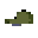 |
Basecap | Gewöhnlich | +1% Wert | 11,3% |
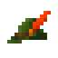 |
Tirolerhut | Gewöhnlich | hält 1% besser, was anbeißt | 11,3% |
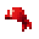 |
Piraten-Kopftuch | Gewöhnlich | +1% Geschwindigkeit | 11,3% |
 |
Regenhut | Gewöhnlich | hält 1% besser, was anbeißt | 11,3% |
 |
Sheriffhut | Ungewöhnlich | +2% Wert | 7,3% |
 |
Kapitänsmütze | Ungewöhnlich | +2% Geschwindigkeit | 7,3% |
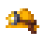 |
Bergmannshelm | Ungewöhnlich | +2% Chance auf einen guten Fisch | 7,3% |
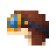 |
Fliegerhaube | Ungewöhnlich | +2% Chance auf einen guten Fisch | 7,3% |
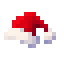 |
Weihnachtsmütze | Ungewöhnlich | +2% Wert | 7,3% |
 |
Piraten-Dreispitz | Selten | +3% Geschwindigkeit | 2,7% |
 |
Zylinder | Selten | +3% Wert | 3,0% |
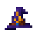 |
Zaubererhut | Selten | +3% Chance auf einen guten Fisch | 3,0% |
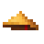 |
Bambushut | Selten | +3% Chance auf einen guten Fisch | 3,0% |
 |
Hungriger Fisch | Episch | +4% Geschwindigkeit | 1,00% |
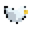 |
Pickende Möwe | Episch | +4% Chance auf einen guten Fisch | 1,00% |
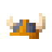 |
Wikingerhelm | Episch | hält 4% besser, was anbeißt | 1,00% |
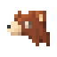 |
Bärenkapuze | Episch | hält 4% besser, was anbeißt | 1,00% |
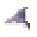 |
Haikopf | Episch | +4% Geschwindigkeit | 1,00% |
 |
Kaiserkrone | Legendär | +5% Wert | 0,33% |
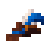 |
Musketierhut | Legendär | +5% Geschwindigkeit | 0,33% |
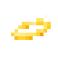 |
Heiligenschein | Legendär | +5% Chance auf einen guten Fisch | 0,33% |
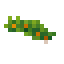 |
Lorbeerkranz | Legendär | hält 5% besser, was anbeißt | 0,33% |
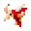 |
Boi-bumbá | Himmlisch | 1% bis 3% Chance auf einen Doppelfang | nur in der Meisterschaft |
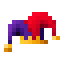 |
Narrenkappe | Himmlisch | 1% bis 3% Chance, dass der Köder nicht verbraucht wird | nur in der Meisterschaft |
Drei Zustände desselben Huts
Jeder Hut fällt in einem von drei Zuständen, und der Zustand verschiebt den Bonus um einen halben Punkt in beide Richtungen. Der Zustand getragen ist der Wert aus der Tabelle oben; abgetragen zieht einen halben Punkt ab, neu legt einen halben drauf.
| Zustand | Auf den Bonus | Chance | |
|---|---|---|---|
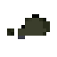 |
Abgetragen | -0,5 Pp. | 55% |
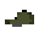 |
Getragen | — | 35% |
| Neu | +0,5 Pp. | 10% |
Auf Steam sind das drei verschiedene Items. Jeder Zustand hat im Inventar eine eigene Nummer, also werden sie auf dem Markt getrennt gekauft und verkauft — und weil neu der seltenste der drei ist, ist er am meisten wert.
Bei den zwei himmlischen Hüten wiegt der Zustand mehr, weil ihr Effekt kein Balken ist, sondern ein Ereignis — der Köder, der nicht verbraucht wird, der Fisch, der doppelt kommt. Bei ihnen ist die Leiter 1%, 2% und 3%.
Der Strohhut ist als einziger außen vor: Alle beginnen mit ihm, also gibt es ihn nur in der gewohnten Version.
Die Meisterschaft
Die himmlischen — der Boi-bumbá und die Narrenkappe — bringt nie der Storch. Sie sind der Preis der monatlichen Meisterschaft, und das Podest bekommt denselben Hut in drei Zuständen:
| Platz | Bekommt |
|---|---|
| 1º | den himmlischen Hut im Zustand neu |
| 2º | den himmlischen Hut im Zustand getragen |
| 3º | den himmlischen Hut im Zustand abgetragen |
Jede Ausgabe gilt einem der himmlischen Hüte. Die erste gilt der Narrenkappe. Der Preis ist ein Item wie jeder andere Hut: Du kannst ihn tragen, tauschen und verkaufen.
Der Kleiderschrank
Der Bildschirm, in dem die Hüte wohnen — über das Menü (Taste ▲). Er zeigt, was fehlt, und lässt dich tragen, was du hast.
Jeder Hut ist eine Zeile, und die drei Zustände sind drei Spalten mit der jeweiligen Anzahl. Ein Klick auf eine Zelle setzt den Hut auf; ein Klick auf den, der schon auf dem Kopf sitzt, nimmt ihn ab. Ein Platz, den du nie hattest, zeigt einen Strich; einer, den du hattest und verkauft hast, eine Null.
Was du noch nicht gesehen hast, erscheint als ???, nur mit der Seltenheit.